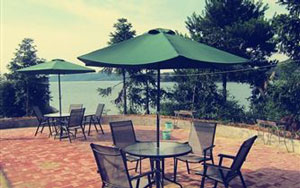

碧水、阳光、沙滩、排球、皮艇、潜水，这里是武宁县杨洲金沙滩休闲度假村。这个夏天，金沙滩休闲度假村的“避暑游”日渐火爆。景区自6月份试营业以来，接待游客已超过10000人次。
金沙滩休闲度假区是武宁县花源谷景区的一个新项目，目前拥有100亩一类水体水域、1座沙滩浴场和30多间休闲小木屋，建设了活动展演区、景观休憩区、冲浴服务区、餐饮购物区、运动娱乐区，设计了冲浪旋艇、快艇、帆船、皮划艇、潜水等水上趣味运动及沙滩排球、沙滩烧烤等水岸娱乐活动，是九江市唯一一家沙滩游乐场所。